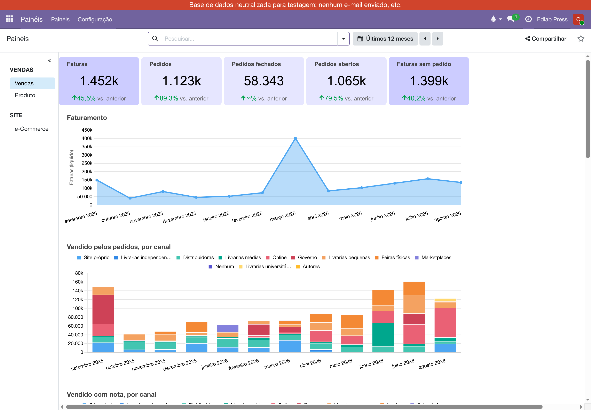
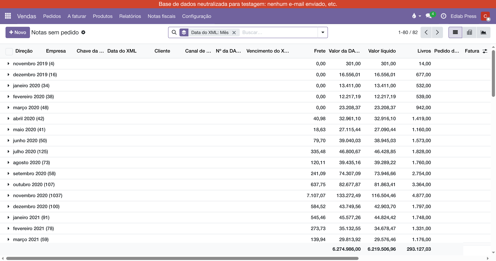

Uma editora vende duas vezes: quando o pedido é feito e quando a nota fiscal sai. Os dois números nunca batem ao centavo, e não devem — o pedido tem a data comercial e o canal; a nota tem a data da NF-e e o que de fato saiu com documento. O painel de Vendas mostra os dois, um debaixo do outro, e diz quanto um está longe do outro.
Em . É o painel de Vendas do próprio Odoo, com o conteúdo reescrito — não há uma segunda entrada. Quem vê é quem tem o perfil de Gerente de Vendas.

Os cartões em lilás mais forte vêm da nota fiscal; os mais claros, do pedido. Cada um compara com o período anterior ("↑ 12% vs. anterior") e abre, ao clique, a lista de onde o número saiu — já com o período do painel.
| Cartão | O que soma | O clique abre |
|---|---|---|
| Faturas | Notas fiscais de venda e de acerto emitidas por nós, pelo líquido dos itens (capa menos desconto, sem frete), não canceladas. | Vendas ‣ Notas fiscais ‣ Notas de venda |
| Pedidos | Pedidos de venda confirmados, pela data do pedido. | Análise de vendas |
| Pedidos fechados | A parte dos pedidos que já virou fatura. | Análise de vendas |
| Pedidos abertos | Pedidos menos Pedidos fechados: o que foi vendido e ainda não foi faturado. | Pedidos a faturar |
| Faturas sem pedido | Notas de venda cuja fatura não está ligada a pedido nenhum, ou que não têm fatura. | Vendas ‣ Notas fiscais ‣ Notas sem pedido |
"Faturas" é o número do gerente de vendas — quanto vendemos no mês. É a mesma régua do Painel de Notas Fiscais: se um dia os dois discordarem, a diferença é frete.
Logo abaixo dos cartões, a linha Faturamento é a evolução das Faturas mês a mês. Depois vêm os dois gráficos de barras, por canal de vendas: Vendido pelos pedidos (data do pedido) e Vendido com nota (data da nota). Uma barra que existe num e não no outro é normal — o pedido de 30 de agosto sai com nota em setembro. Um clique numa barra abre a lista daquele mês e daquele canal.
Mais abaixo ficam as tabelas mês a mês (vendido, faturado e a faturar pelos pedidos; vendido, livros e notas pelas notas), o gráfico de vendas mensais por pedido e as listas de principais cotações, pedidos, clientes e canais.
| Filtro | O que faz |
|---|---|
| Período | Move os dois relógios, cada um pela sua data. "Últimos 12 meses" são os doze meses fechados antes do atual — o mês corrente fica de fora. |
| Cliente | Recorta pedidos e notas de um cliente. |
| Canal de vendas | Recorta por canal (Online, Livrarias, Feiras…). |
A empresa é a do seletor no topo da tela: com duas empresas marcadas, os cartões somam as duas.
Em há duas listas com o mesmo recorte dos cartões: Notas de venda (o universo do cartão Faturas) e Notas sem pedido. As duas abrem agrupadas por mês, com a coluna Valor líquido somada no rodapé — é esse rodapé que tem de bater com o cartão.

Uma nota nesta lista é uma de duas coisas, e o nome do cartão só diz uma delas. Os filtros separam:
| Filtro | O que é | O que fazer |
|---|---|---|
| Sem fatura | O XML está aqui e ninguém criou a fatura dele no Odoo. No site, é o pedido do Olist que ainda não foi importado. | Importar o pedido (Olist ‣ A importar) ou criar a fatura a partir da nota. |
| Fatura sem pedido | A fatura existe e nenhuma linha dela está amarrada a um pedido de venda: venda direta, ou fatura feita à mão. | Se há pedido, abrir a fatura e preencher, em cada linha, o pedido que ela paga — senão ele fica "a faturar" do outro lado. |
| Com pedido | A fatura paga pelo menos uma linha de pedido. É o normal, e fica fora do cartão. | Nada. |
Os três filtros ficam na busca de qualquer lista de notas fiscais, não só nas do cartão.
Manual completo, com busca e as demais páginas: Painel de Vendas.